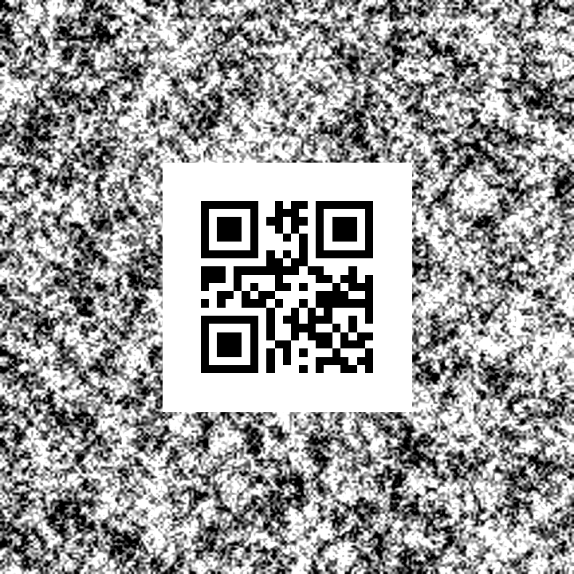

A · BẮT ĐẦU

Toàn bộ ảnh vuông: 18 × 18 cm. In 100% / Actual size; KHÔNG Fit to page.
Dán thẳng đứng, giữ cố định và không gấp. Cần thấy cả vùng ảnh quanh QR.
Chỉ dùng cặp thẻ mới này với bản 0.3.0; QR cũ đơn lẻ không tự định vị.
Vạch kiểm tra bên trên phải dài đúng 10 cm.